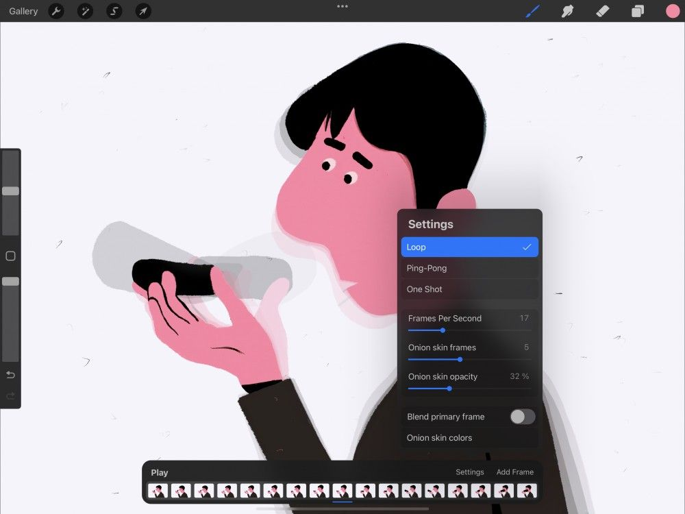
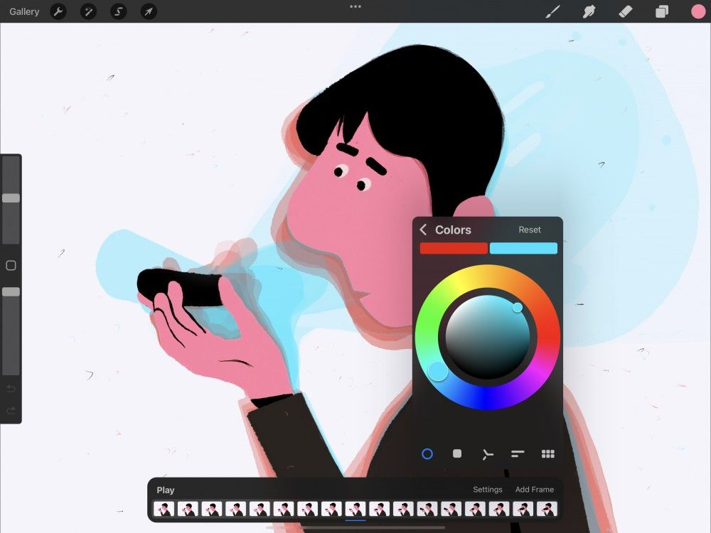

📖 Đã dịch sang tiếng Việt. Thuật ngữ chuyên môn giữ tiếng Anh — rê chuột để xem nghĩa (tooltip).
Settings
Thay đổi nhịp độ, hiển thị và thuộc tính của hoạt hình.
Menu Settings
Điều chỉnh tốc độ và vòng lặp của hoạt hình, cùng tinh chỉnh thiết lập onion skin (lớp hành lá).

Chạm Settings ở phía bên phải thanh công cụ Animation Assist để mở menu Settings.
Menu này điều khiển thiết lập cho toàn bộ hoạt hình và giao diện Animation Assist.
Để đổi thiết lập cho từng frames, xem phần Frame Options.
Frames mỗi giây
Thay đổi tốc độ hoạt hình của bạn.

Hoạt hình tạo ảo giác chuyển động. Nó làm điều đó bằng cách phát chuỗi bản vẽ nhanh đến mức hòa vào nhau và dường như di chuyển. Hoạt hình điển hình phát khoảng 12 bản vẽ duy nhất mỗi giây. Tuy nhiên hoạt hình chất lượng điện ảnh có thể lên tới 24 bản vẽ mỗi giây. Càng nhiều frames mỗi giây, hoạt hình trông càng mượt.
Bạn cũng có thể dùng frames mỗi giây để tăng tốc và giảm tốc các frames hiện có. Làm chậm hoạt hình bằng cách giảm tốc độ khung hình. Hoặc làm chậm bằng cách thêm nhiều frames trung gian (in-between) vào hoạt hình.
Để đổi tốc độ khung hình, hãy kéo thanh hẹn giờ Frames Per Second. Bạn có thể đặt từ 1-60 frames mỗi giây.
Onion Skinning (lớp hành lá)
Hiển thị các bản sao bán trong suốt của các bản vẽ ở hai bên frames hiện tại.
Trong hoạt hình vẽ tay truyền thống, các họa sĩ từng xếp chồng các tờ bản vẽ lên nhau trên hộp đèn. Ánh sáng xuyên qua giấy mỏng sẽ làm lộ các bản vẽ xung quanh bản vẽ hiện tại. Điều này giúp họa sĩ xác định cần vẽ gì tiếp theo để tạo chuyển động mượt mà và chân thực. Vì các tờ giấy hoạt hình mỏng như vỏ hành (onion skin), kỹ thuật này được gọi là ‘onion-skinning’.
Chức năng onion-skinning trong Procreate mang đến cho bạn khả năng tương tự. Nó cho phép bạn thấy tổng quan hoạt hình quanh frames hiện tại.
Các frames nằm ngay cạnh frames hiện tại hiển thị gần như đặc. Các frames càng xa dần thì càng trong suốt.
Số frames của Onion Skin
Để đặt số frames hiển thị trong onion-skinning, hãy kéo thanh trượt Onion skin frames. Bạn có thể đặt onion-skinning thành None (không), chỉ hiện frames hiện tại. Hoặc đẩy lên tối đa 12 frames xung quanh.
Độ mờ của Onion Skin
Để đặt độ trong suốt của các frames onion-skin, hãy kéo thanh trượt Onion skin opacity. Bạn có thể đặt onion-skinning thành 0%, làm các frames khác vô hình. Hoặc đặt tối đa 100%, làm các frames xung quanh gần như đặc hoàn toàn.
Pha trộn frames chính
Theo mặc định, frames chính (hiện tại) của bạn hiển thị đặc phía trên mọi frames onion-skin phụ (xung quanh). Hãy tạo vẻ ngoài pha trộn, trong suốt hơn bằng cách gạt công tắc Blend primary frame.
Màu của Onion skin
Theo mặc định, các frames phụ phía trước frames chính (hiện tại) có màu xanh lá, còn các frames phía sau có màu đỏ. Bạn có thể chỉnh màu các frames phụ này cho phía trước và phía sau.
Chạm nút Onion skins colors để mở bảng Color (màu).

Để đổi màu của các frames phụ phía trước, hãy chạm nút màu xanh lá ở góc trên bên phải bảng Colors rồi chọn màu yêu thích.
Để đổi màu của các frames phụ phía sau, hãy chạm nút màu đỏ ở góc trên bên trái bảng Colors rồi chọn màu yêu thích.
Một lần / Lặp / Ping Pong
Đặt hoạt hình phát một lần, lặp lại liên tục, hoặc phát lặp xuôi và ngược.
Các nút ở trên cùng bảng Settings cung cấp ba cách khác nhau để phát các frames hoạt hình.
Các frames hoạt hình sẽ phát từ đầu đến cuối. Sau đó ngay lập tức quay lại từ đầu và phát tiếp. Vòng lặp này tiếp tục lặp đi lặp lại. Thiết lập này phù hợp cho chuyển động lặp liên tục như chu kỳ bước đi. Nó cũng là cách tiêu chuẩn để GIF hoạt hình phát trên internet. GIF làm vậy bất kể nội dung có được thiết kế để lặp hay không.
Ping Pong
Các frames hoạt hình sẽ phát từ đầu đến cuối, rồi từ cuối về đầu, rồi lặp lại quá trình. Hiệu ứng giống một chuyển động bật qua bật lại như quả bóng trong bóng bàn. Thiết lập này phù hợp cho chuyển động lặp đảo ngược chính nó, như một số động tác khiêu vũ.
Một lần (One Shot)
Các frames hoạt hình sẽ phát từ đầu đến cuối một lần rồi dừng. Thiết lập này phù hợp cho một hoạt hình kể chuyện đơn giản, có mở đầu và kết thúc.
Still have questions?
If you didn't find what you're looking for, explore our video resources on YouTube or contact us directly. We’re always happy to help.